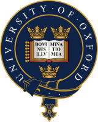
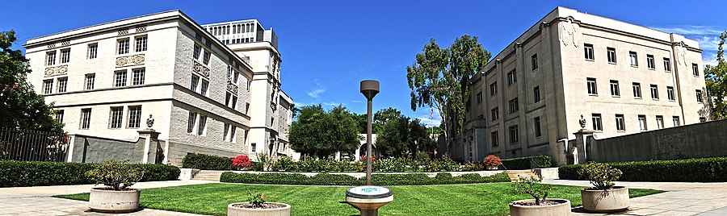
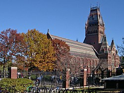
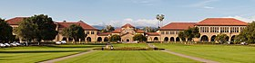
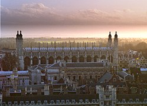

ТОП-5 найкращих університетів світу
Оксфордський університет (Велика Британія)
О́ксфордський університе́т — найстаріший англомовний університет у світі, а також перший університет у Великій Британії. Заснований[ким?] в 1096 році, розташований в місті Оксфорд, графство Оксфордшир.
Університет складається з факультетів і 39 коледжів, а також 7 так званих гуртожитків — закритих навчальних закладів, які не мають статусу коледжу і належать, як правило, релігійним орденам. Всі іспити, як і більшість лекцій і лабораторних занять організовані централізовано, в той час як коледжі проводять індивідуальні заняття із студентами і семінари.
Каліфорнійський технологічний інститут (США)
Каліфорнійський технологічний інститут (англ. California Institute of Technology; часто скорочується до Caltech, українською «Калтех» або «Калтек») — приватний університет, розташований в місті Пасадена в штаті Каліфорнія. Калтех — один з провідних університетів в США, і один з двох найважливіших, разом з MIT, що спеціалізуються в точних науках і інженерії. Калтеху також належить Лабораторія реактивного руху, яка запускає велику частину автоматичних космічних апаратів NASA.
Harvard University (USA)
Га́рвардський університет (або просто Га́рвард) — приватний університет в американському місті Кембридж, штат Массачусетс. Заснований в 1636 році, Гарвард — найдавніший чинний заклад вищої освіти в США. Гарвард вважають одним із найкращих університетів світу. У 2010 році Гарвард посів 2-е місце у міжнародному рейтингу університетів планети QS, вперше за всю семирічну історію рейтингу поступившись верхнім рядком Кембриджу (Англія).
Стенфордський університет (США)
Університет імені Ліленда Стенфорда-молодшого (англ. Leland Stanford Junior University) або Стенфордський університет — приватний вищий навчальний заклад міста Стенфорд, Каліфорнія, США.
Стенфордський університет був заснований залізничним магнатом, колишнім губернатором Каліфорнії та сенатором США Лілендом Стенфордом із дружиною Джейн Летроп Стенфорд. Засновуючи університет, Стенфорди намагалися зберегти в людях пам'ять про свого сина Ліленда Стенфорда-молодшого, який помер у 16-річному віці від тифу в Європі. Грант на заснування університету був підписаний 11 листопада 1885 року, через три дні, 14 листопада, був прийнятий Радою опікунів. Будівництво почалось 14 травня 1887 р. Відкрився університет 1 жовтня 1891 з 559 студентами та 15 викладачами.
У Стенфорді навчається за бакалаврською програмою приблизно 6800 студентів та 8300 аспірантів. Університет розділений на кілька шкіл, наприклад: Стенфордська школа бізнесу, Стенфордська школа права, Стенфордська школа медицини, Стенфордська школа інженерної справи тощо.
Університет розташований в Кремнієвій долині, його випускники заснували такі визначні компанії як Nike, Hewlett-Packard, Sun Microsystems, Nvidia, Yahoo!, Cisco Systems, Silicon Graphics та Google. В університеті Філіп Зімбардо проводив Стенфордський тюремний експеримент.
Станом на 2018 р. в Стенфорді було зареєстровано 81 нобелівський лауреат, 27 лауреатів премії Тюрінга та 8 медалістів. Стенфордські випускники заснували велику кількість компаній, які об'єднували продукцію більше $ 2,7 трлн річного доходу і за період 2011-2018 рр. створили 5,4 млн робочих місць.
Університет проводив понад 200 глобальних експериментів та досліджень. Серед них найцікавішими стали:
- Дослідження щодо того, як середньостатистична людина сприймає гумор, яким чином гумористичні сюжети потрапляють в ЗМІ та чому навіть ті, хто не мають почуття гумору, сприймають комічне в мас-медіа.
- Дослідження змін психологічного стану людини під час впливу на організм певних механічних факторів. (наприклад, масаж, лоскот тощо).
Кембриджський університет (Велика Британія)
Ке́мбриджський університе́т — один з найстаріших та найвідоміших університетів у світі. Університет в Кембриджі — це незалежна самоврядна корпорація, що складається з низки установ (коледжі та університет у тісному сенсі), що не одержує від уряду ніякої допомоги і що не підлягає жодному нагляду; вона посилає до парламенту двох депутатів.
Разом з Оксфордським університетом є найпрестижнішим університетом Великої Британії. Кембриджський університет входить у п'ятірку найпрестижніших навчальних закладів у світі. Станом на 2009 рік випускниками Кембриджа є 83 нобелівські лауреати — за цим показником він лідирує серед університетів світу.
Ректор Кембриджа — Принц Філіп, герцог Единбурзький, віце-ректор — професор Елісон Річард.